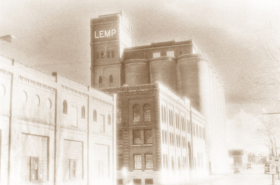

Rowboat in a bay. Lochcarron, Highlands, Scotland. (Infrared black &
white print)
Infrared black & white photography has been long-favored by photographers
for the dramatic and other-worldly manner in which subjects are rendered,
particularly landscapes and structures -skies render as black unless there
is cloud cover, green leaves render as white... and any surfaces
reflecting sunlight 'glow'. This results in some of the most dramatic
photographs you will likely ever see. Take a look at our photographs and
see if there isn't something to capture your fancy...
The Very Large Array, radio telescopes in Socorro, New Mexico
(Infrared black & white print -tinted).
Ghostly tree along the Rio Grande River, Taos, New Mexico. (Infrared
black & white print).
Cuillin Mountain range, Isle Skye, Scotland. (Infrared black & white
print).

Old Lemp Brewery, Saint Louis, MO. (Infrared black & white print
-tinted).
Green Lane Railway Station, Birkenhead, England (Infrared Black &
White print -tinted).
Ruins of a 16th century Celtic church, Isle of Skye, Scotland.
(Infrared black & white print).
Ruins of a chapel atop a dormant volcano. Edinburgh, Scotland.
(Infrared Black & White print -tinted).
Courtyard doorway in a medieval bastide. Dordogne, France. (Infrared
black & white print).
Bombed-out ruin of Church of St. Luke. Liverpool, England (Infrared
Black & White print).
Native American pueblo in Taos, New Mexico (Infrared Black & White
print).